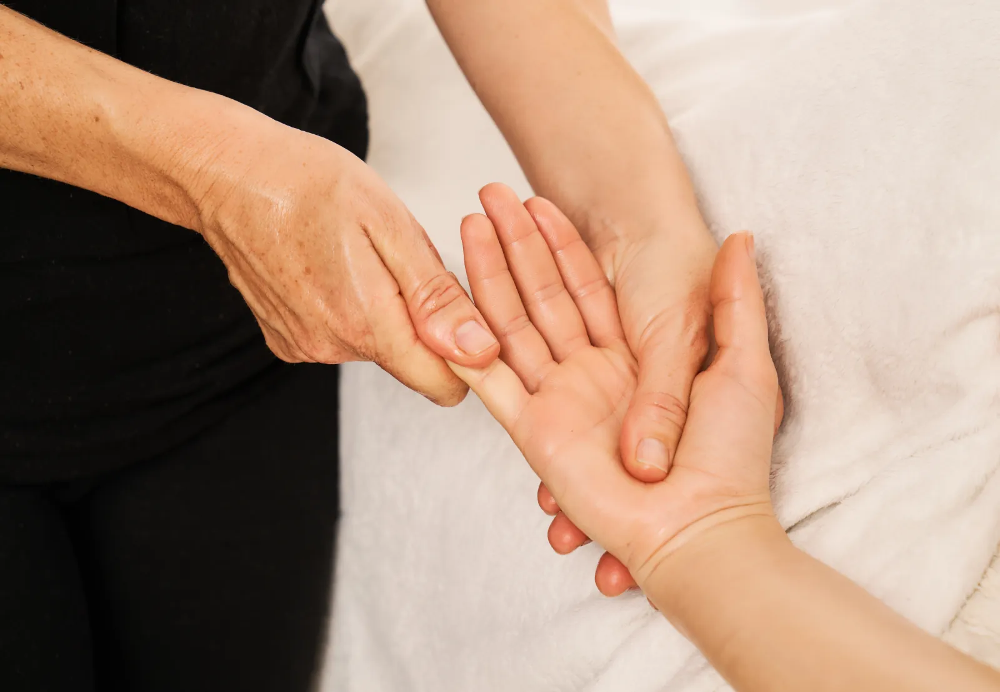

01 · Énergétique
Shiatsu thérapeutique
Pratique japonaise basée sur des pressions le long des méridiens, étirements et travail ostéo-articulaire. Inclut l'Amma assis pour l'entreprise.
60€ · 1h
Découvrir →

02 · Corporel
Réflexologie
Stimulation des points réflexes des pieds. Cible sommeil, digestion, stress, circulation.
60€ · 1h
Découvrir →
03 · Olfactif
Aromathérapie
Conseil personnalisé en huiles essentielles, synergies sur-mesure pour soutenir le quotidien.
Sur consultation
Découvrir →